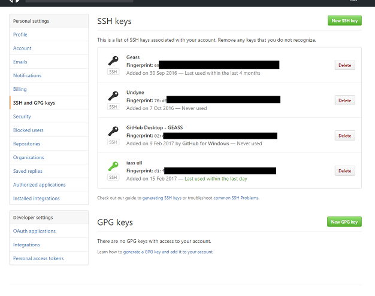

Git
¿Qué es git?
Es un software de control de versiones diseñado pensando en la eficiencia y la confiabilidad del mantenimiento de versiones de aplicaciones cuando éstas tienen un gran número de archivos de código fuente.
¿Cómo instalar git?
Instalación en Windows
Abre cualquier navegador y accede a la siguiente dirección: http://msysgit.github.com Entra en la sección Downloads y descarga la versión más reciente que exista. Instala el archivo .exe descargado como cualquier otra aplicación de Windows.
Instalación en Linux
Ejecuta el siguiente comando:
- En distribuciones Fedora, RedHat y CentOS
$ yum install git-core - En distribuciones Debian y Ubuntu
$ apt-get install git-core
Instalación en Mac OS X
Abre cualquier navegador y accede a la siguiente dirección: http://git-scm.com Descarga la versión más reciente que veas en la propia portada de ese sitio web. Instala el archivo .dmg descargado como cualquier otra aplicación de Mac.
¿Cómo iniciamos git?
Para iniciar git sobre un directorio simplemente debemos ejecutar el comando:
$ git init
Al hacer esto se crea un directorio .git que contendrá toda la información de de nuestro proyecto y las modificaciones por las que ha pasado.
Comandos de git:
- Clonar un repositorio:
$ git clone username@host:/path/to/repository - Añadir archivos al control de versiones:
$ git add <filename>o también$ git add . - Comentar cambios:
$ git commit -m "Commit message" - Conectar con el repositorio remoto:
$ git remote add <nombre> <server> - Enviar cambios:
$ git push origin master - Crear una rama y situarte en ella:
$ git checkout -b feature_x - Cambiar de rama:
$ git checkout <rama> - Borrar rama:
$ git branch -d <rama> - Actualizar el repositorio local:
$ git pull - Fusionar una rama a tu rama activa:
$ git merge <rama> - Comprobar cambios:
$ git diff <source_branch> <target_branch> - Crear una etiqueta a un commit:
$ git tag <etiqueta> <commit> - Consultar commits:
$ git log - Reemplazar cambios locales:
$ git checkout -- <filename> - Traer última versión:
$ git fetch origin - Deshacer todos los cambios locales y commits:
$ git reset --hard origin/master - Interfaz gráfica por defecto:
$ gitk - Colores especiales:
$ git config color.ui true - Mostrar sólo una línea por cada commit en la traza:
$ git config format.pretty oneline Agregar archivos de forma interactiva:
$ git add -iClaves ssh
Puede ser útil generar claves públicas y privadas para acceder a los comandos de git que requieran autenticación sin necesidad de escribir los credenciales. Para ello utilizaremos las herramientas de git que han sido instaladas junto con el paquete.
Generar una clave ssh si no existe una previamente:
shh-keygen- Copiar la clave ssh del archivo
~/.ssh/id_rsa.pub. - Añadir la clave a GitHub, bajo el apartado SSH and GPG keys en las opciones del perfil de GitHub.
